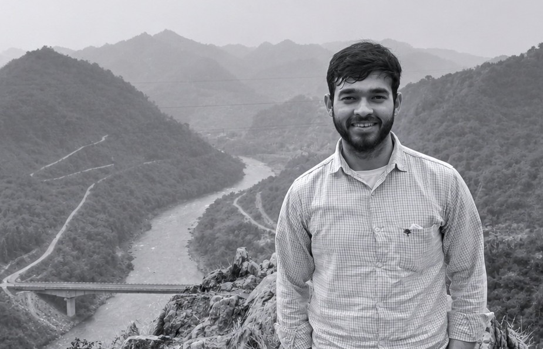

Vijay Singh
Hi! I am an M.Tech graduate in Transportation Systems Engineering from the Indian Institute of Science (IISc) Bengaluru. I work on transportation modelling, optimization, simulation, and mobility data analytics, and my research interests primarily focus on methods for improving mobility systems.
Biography
I completed my M.Tech in Transportation Systems Engineering at the Indian Institute of Science, Bengaluru, and my B.Tech in Civil Engineering at Punjab Technical University. My academic work has focused on transportation systems modelling, traffic network equilibrium, optimization methods, public transportation, logistics and freight modelling, and machine learning for mobility systems.
My M.Tech thesis studied the estimation of origin-destination matrices using traffic counts through a VISSIM-based digital twin and an automated Python workflow. I have also worked on optimization and algorithmic projects involving branch-and-cut, branch-and-bound, column generation, routing, last-mile mobility analysis, and transport data visualization.
Current Research Interests
My current research interests lie in traffic and transportation simulation, dynamic origin-destination estimation, transportation network optimization, public transport systems, logistics, and mobility analytics. I am particularly interested in combining mathematical programming, data, and simulation to support better planning and operations in transport systems.
Education
Transportation Systems Engineering
Indian Institute of Science, Bengaluru
CGPA: 7.8 / 10
Civil Engineering
Punjab Technical University
CGPA: 8.8 / 10